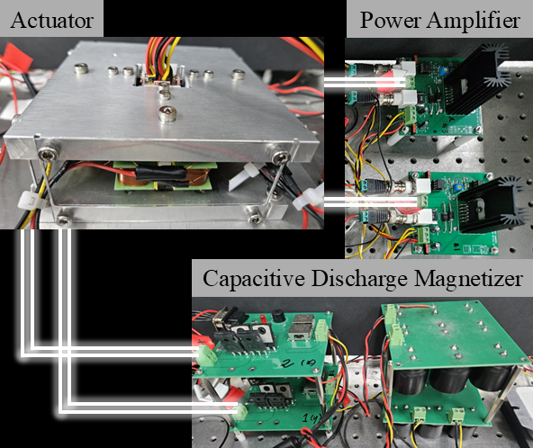
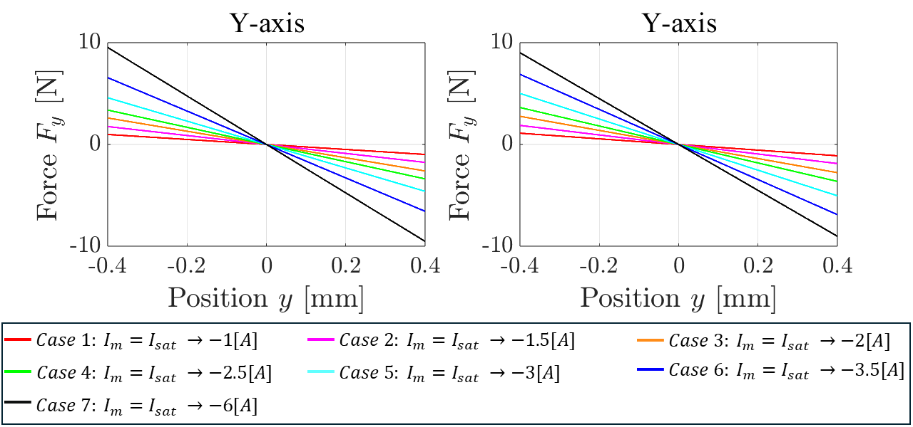
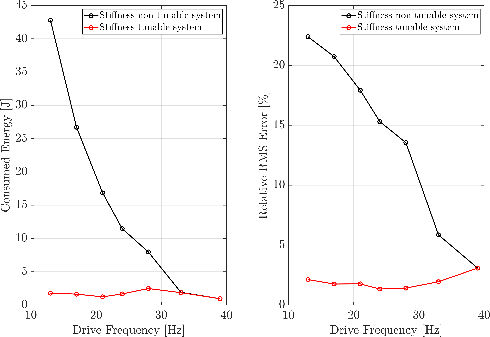

Active Stiffness Tunable StageAlNiCoUltra-low Power
AlNiCo-Based Active Stiffness-Tunable XY Stage
Active stiffness tuning for resonance-matched, high-gain control of ultra-low-power, large-area scanning motion.
- Role
- Lead researcher
- My contribution
- Proposed the active stiffness-tunable stage concept and implemented stiffness tuning using AlNiCo-based tunable magnets.
- Result
- Achieved up to a 24.04× reduction in energy consumption compared with a non-stiffness-tunable stage.
- Output
-
- Journal: Manuscript in preparation
- ASPE 2026: Accpeted for oral presentation
- PRESM 2025: Poster presentation
- KSPE 2026: Poster presentation